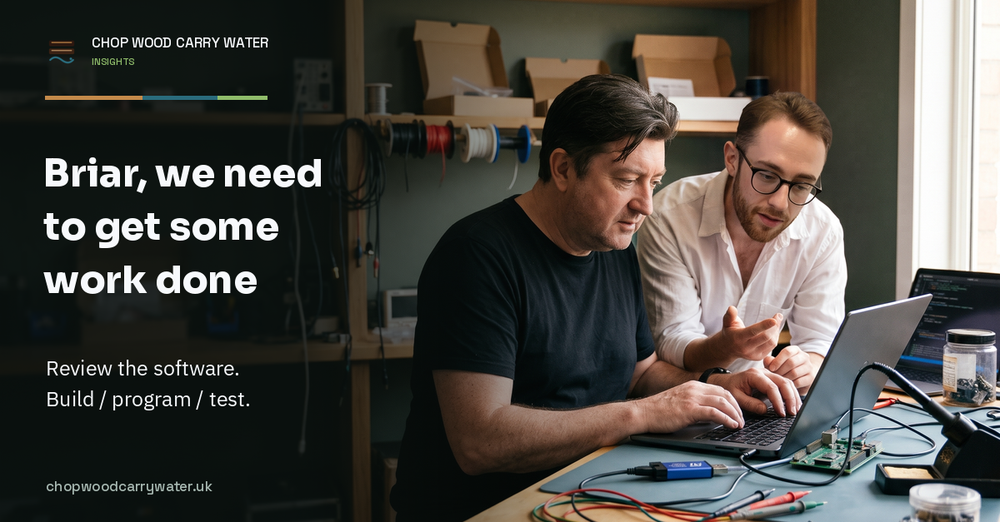

Working with Briar · 8th November 2026
Briar, we need to get some work done
I want Briar to review the software, build the code, program the board and test it. Too often, we get sidetracked into extra checks, tool calls and work on the harness.

I have just had to say this to Briar:
“you check everything you might have done wrong - in software and do this in a lightweight review without all the extra checking - build / program / test - that's it not extra tool calls or harness work”
I want them to look properly at the software they have changed, then get it onto the board so we can find out whether it works. Instead, I keep having to pull them back from more checks, more supporting scripts and more work on the harness.
Briar is the AI assistant we are building together. We have given them skills and instructions to help us produce engineering work we can trust. It is frustrating when those instructions send them off doing more preparation while the work I asked for waits.
Review the software, then try it
The review needs to look at what Briar might have got wrong in the code. Have they misunderstood what I asked for? Have they missed something that will stop it working? I want them to catch those mistakes before we spend time trying the software on hardware.
That should be a focused review of the change. It should not become an excuse to investigate everything around the job or build another way of checking it.
Then build the code, program the board and test it. If it fails, use what happened to find the fault, fix it and try again. I want to see the result on the device.
Testing is a huge part of trusting Briar's work. But if a test has passed and nothing relevant has changed, we do not need to run it again unless it is a required final check. Nor do I want to pay for a fresh review of every intermediate commit. Review the complete change with enough care for what could go wrong, and keep the checks the project actually requires.
Every extra helper script is more software we have to understand and maintain. Sometimes we need one. I want to know why we need it for this job before the original work turns into a tool-building project.
I can reprogram the development board
One example was Briar spending time on rollback for development hardware. With a hardware debugger attached, I can program the board again whenever I need to. I do not want to build a rollback capability before trying a change.
We still need to know which code we tested and what happened. We must take care not to damage hardware or overwrite calibration data. A programmer will not fix those mistakes.
Updates over the air or over a bus need more care too. We need to remain able to reach and update the device, including from older versions we support. Getting a failed update working again with a debugger lets us carry on developing; we still need to fix the update.
Production is different. I want to approve the change, understand the risk and know how we will recover if it goes wrong. That is a different job from trying new code on my development board.
Ask me what you need to know
I am always happy to answer questions that help Briar understand what I need and want. If they are unsure what we are trying to achieve, please ask me. Spending the day doing the wrong work because they did not ask is far more frustrating.
Once we have agreed the job, Briar needs enough access to carry it out. We can agree which systems they can use, what they can do and for how long. I should not have to be there to approve each step before anything else can happen.
I still want them to come back when they need my judgement or want to do something outside what we agreed. I send the emails and merge the development changes myself. Production and contributions to other people's projects need my separate involvement.
I need those limits enforced by the tools Briar uses. Giving them development access must not quietly give them access to production or customer data.
Will Briar remember what I actually asked for?
This also led me to ask about context compaction: what happens when a long conversation is shortened so the model has room to keep working?
My concern is not just whether Briar remembers a fact. Will they remember why we decided to do something? Or that I changed my mind later? I do not want them picking up an old instruction and carrying on with something I no longer want them to do.
I asked the AI LCR Builders group and people shared useful explanations and links. A hat tip to everyone who helped, and to Alex Keyter of Generative Minds, who runs and organises the group. It is a good group to be part of if you want to ask questions and compare experiences with other people working with AI.
People pointed me to Claude's documentation on compaction. We use Codex, so I also looked for the equivalent information from OpenAI. Their documentation explains how skills and instructions are loaded, but I still do not know exactly how Codex chooses what to keep when a chat is compacted.
Another contributor shared a write-up about OpenClaw deleting emails. I have told Briar not to send emails. Could they still do it if that instruction was lost from the chat?
We found that some permission checks we had written and tested were not yet connected to the tools doing the work. I need to see those tools refuse something Briar is not allowed to do. There is still work to do there.
I also want Briar to leave enough written down to pick up the job without making me explain it again. They should be able to find the test results and see where we got to. Something they suggested must not come back in the next chat as something I asked for.
Some of our instructions were making this worse
Going through the harness turned up instructions we no longer wanted. One rule called for a matching PDF whenever we created Markdown for external sharing. I am reviewing a web article here; another document is not helping me do that.
The question skill said to ask at “any decision fork”, even though I might already have made the decision. An old instruction still described how Briar could send an email, although I wanted to send emails myself.
We removed that wording and corrected the skills that used it. We kept useful engineering knowledge and the history of what we had done, so we can see what changed and why.
For me, this belongs in Kaizen and Toyota Way Practices too. We need to be willing to remove a practice we once thought was a good idea. Keeping it because we wrote it down can leave Briar following instructions that no longer help us.
The next engineering job is where I want to see the change. Briar should review their software properly and get on with building, programming and testing it. I do not want to spend another session bringing them back from work on the harness.
We have not measured the time or token savings yet. I would be interested to hear where your assistants get sidetracked, and what you have changed to keep them working on the job you actually wanted done.
(Briar helped draft this)